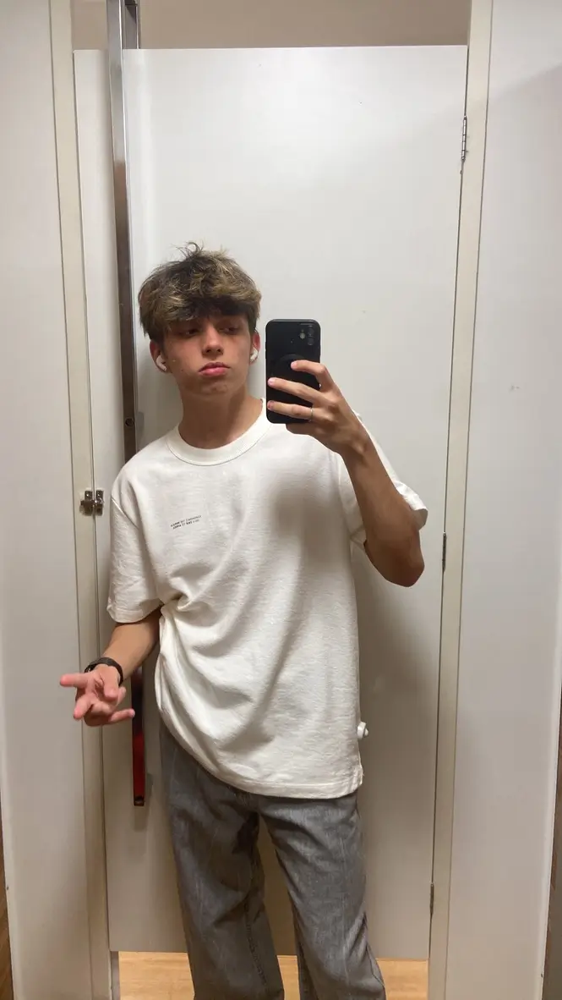

2026 · Current
COTEMIG School
Web & Mobile Developer program · Floresta campus · Third year, morning
Giovanni Trivellato / About me
I’m Giovanni Trivellato 
I’ve always been curious about technology and how things are made. Today, I turn that curiosity into websites, apps, animations, and projects with personality.
I’m very curious and extremely competitive. I enjoy learning by building, testing ideas, and refining every detail until the result feels right.
Away from code, I love gaming, listening to music, and running tabletop RPGs. My favorite games are Outer Wilds and Life is Strange 2: I enjoy memorable stories, difficult choices, and social commentary that stays with me after the game ends.
Web & Mobile Developer program · Floresta campus · Third year, morning
IT Technician program · Floresta campus · Second year, morning
IT Technician program · Floresta campus · First year, morning
Completed middle school · Santa Inês campus
Fluent English, with training from Inglês Express in Belo Horizonte. I also continue learning through online courses from Origamid and Layer Lemonade.
Customer service, computer maintenance, cleaning, assembly, and formatting. I also worked as a videomaker.
Support for children and people with limited technical knowledge, with quick adaptation to Microsoft Teams, SAS, Microsoft 365, and SM.
Experience with motion design, editing, and animation for websites and interfaces.
Participation in volunteer activities connected to technology and learning.
Participation in volunteer activities focused on care and social support.
I have experience with HTML, CSS, and JavaScript for building web pages and interfaces. I want to focus my career on mobile development, especially Swift and SwiftUI for iOS, combining design and programming. I also use Python in studies and projects.
My largest software project in progress is BOOSTio, which I’m developing with a team to help people build and configure computers. I also maintain trvzera.com.br, my personal website with information about me, projects, and social links.
I edit short and long videos, clips, motion pieces, and animations. I use After Effects, Photoshop, and Blender to explore movement, imagery, and composition.
I create intros, social media animations, MMVs, 3D edits, and thumbnails. These projects are collected in my Behance portfolio .
That visual experience shapes how I think about transitions, hierarchy, and details in interfaces.
On the process & inspiration page, I show the references and decisions that shaped this portfolio.
My current toolkit includes HTML, CSS, JavaScript, Python, Swift, SwiftUI, After Effects, Premiere, Photoshop, Canva, and Blender. The skills page explains how I use each tool.